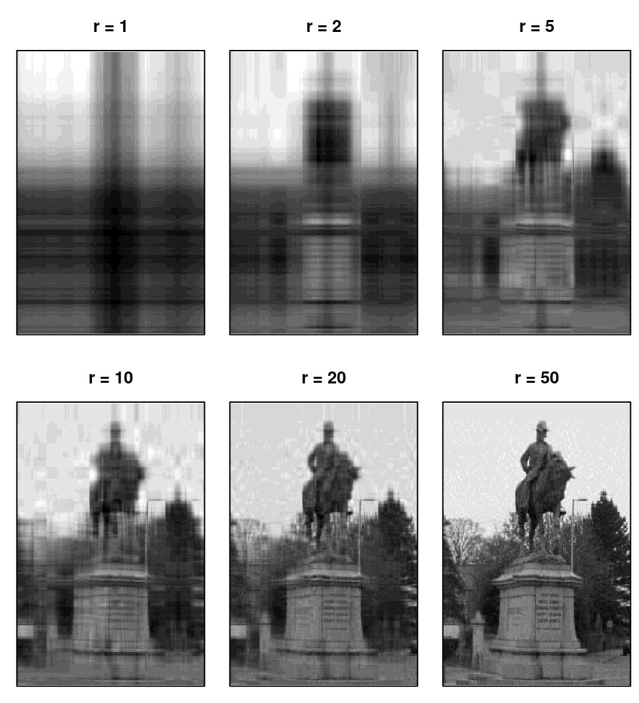

3 Matrix-based computing
3.1 Motivation
Perhaps surprisingly, much of a computation that we do when fitting a statistical model can be formulated with matrices. The linear model is a prime example. In this chapter we’ll explore some key aspects of matrices and calculations involving them that are important for statistical computing. A particularly useful reference for matrices, especially in the context of statistical computing, is the Matrix Cookbook (Petersen and Pedersen (2012)).
3.2 Definitions
3.2.1 Matrix properties
Let’s consider an \(n \times n\) matrix \(\bf A\) and \(n \times p\) matrix \(\bf B\). We will let \(A_{ij}\), for \(i, j = 1, \ldots, n\) denote the \((i, j)\)th element of \(\bf A\), i.e. in row \(i\) and column \(j\). We’ll assume that \(\bf A\) is stored in R as A.
Definition 3.1 (Real matrix) \(\bf A\) is real if all its elements are real numbers. (We’ll only consider real matrices in MTH3045, so ‘real’ may be taken as given.)
Definition 3.2 (Matrix transpose) The transpose of a matrix, denoted \(\mathbf{A}^\text{T}\), is given by interchanging the rows and columns of \(\bf A\).
Definition 3.3 (Cross product) The cross product of matrices \(\mathbf{A}\) and \(\mathbf{B}\) is \(\mathbf{A}^\text{T} \mathbf{B}\).
Remark. crossprod(A, B) is more efficient that t(A) %*% B because R recognises that it doesn’t need to transpose A and can instead perform a modified matrix multiplication in which the columns of A are multiplied by the columns of B.
Remark. crossprod(A) is equivalent to crossprod(A, A) and tcrossprod(A) to tcrossprod(A, A).
Definition 3.4 (Diagonal matrix) A matrix is diagonal if its values are zero everywhere, except for its diagonal, i.e. \(A_{ij} = 0\) for \(i \neq j\).
Definition 3.5 (Square matrix) A matrix is square if it has the same numbers of rows and columns.
Definition 3.6 (Rank) The rank of \(\bf A\), denoted rank(\(\bf A\)), is the dimension of the vector space generated (or spanned) by its columns. This corresponds to the maximal number of linearly independent columns of \(\bf A\). A matrix is of full rank if its rank is equal to its number of rows.
The following apply only to square matrices.
- The \(n \times n\) identity matrix, denoted \({\bf I}_n\), is diagonal and all its diagonal elements are one.
\(\bf A\) is orthogonal if \(\mathbf{A}^\text{T}\mathbf{A} = {\bf I}_n\) and \(\mathbf{A}\mathbf{A}^\text{T} = {\bf I}_n\).
\(\bf A\) is symmetric if \({\bf A} = {\bf A}^\text{T}\).
The trace of \(\bf A\), denoted tr(\(\bf A\)), is the sum of its diagonal entries, i.e. tr(\(\bf A\)) = \(\sum_{i = 1}^n A_{ii}\). In
R,diag(A)extracts the diagonal elements ofA, and sosum(diag(A))computes the trace ofA.\(\bf A\) is invertible is there exists a matrix \(\bf B\) such that \({\bf A} {\bf B} = {\bf I}_n\). Note that \(\bf B\) must be \(n \times n\).
The inverse of \(\bf A\), if it exists, is denoted \({\bf A}^{-1}\).
- A symmetric matrix \(\bf A\) is positive definite if \({\bf x}^\text{T} {\bf A} {\bf x} > 0\) for all non-zero \(\bf x\), i.e. provided all elements of \(\bf x\) aren’t zero. (Changes to the inequality define positive semi-definite (\(\geq\)), negative semi-definite (\(\leq\)), and negative definite (\(<\)) matrices, but in statistical computing it’s usually positive definite matrices that we encounter.)
Example 3.1 (Hilbert matrix) The Hilbert matrix, \(\mathbf{H}_n\), is the \(n \times n\) matrix with \((i, j)\)th elements \(1 / (i + j - 1)\) for \(i, j = 1, \ldots, n\). Write a function to form a Hilbert matrix for arbitrary \(n\). Use this to form \(\mathbf{H}_3\) and then check whether the matrix that you have formed is symmetric.
There are many ways that we could write this function. We should, though, avoid a for loop. Here’s one option.
> hilbert <- function(n) {
+ # Function to evaluate n by n Hilbert matrix.
+ # Returns n by n matrix.
+ ind <- 1:n
+ 1 / (outer(ind, ind, FUN = '+') - 1)
+ }
> H <- hilbert(3)
> H## [,1] [,2] [,3]
## [1,] 1.0000000 0.5000000 0.3333333
## [2,] 0.5000000 0.3333333 0.2500000
## [3,] 0.3333333 0.2500000 0.2000000A matrix is symmetric if it and its transpose are equal. There a various ways we can check this.
## [,1] [,2] [,3]
## [1,] 0 0 0
## [2,] 0 0 0
## [3,] 0 0 0## [1] TRUEOr we can turn to isSymmetric(), which is R’s function for checking matrix symmetry.
## [1] TRUEExample 3.2 (Evaluating the multivariate Normal pdf) Let \({\bf Y} \sim MVN_p({\boldsymbol \mu}, {\boldsymbol \Sigma})\) denote a random \(p\)-vector with a multivariate Normal (MVN) distribution that has mean vector \({\boldsymbol \mu}\) and variance-covariance matrix \({\boldsymbol \Sigma}\). Its probability density function (pdf) is then
\[\begin{equation} f(\mathbf{y} \mid \boldsymbol{\mu}, \boldsymbol{\Sigma}) = \dfrac{1}{\sqrt{(2 \pi)^p | \boldsymbol{\Sigma} |}} \exp\left\{ -\dfrac{1}{2} (\mathbf{y} - \boldsymbol{\mu})^\text{T} \boldsymbol{\Sigma}^{-1} (\mathbf{y} - \boldsymbol{\mu}) \right\}. \tag{3.1} \end{equation}\]
Thus note that, to compute the MVN pdf, we need to consider both the determinant and inverse of \(\boldsymbol \Sigma\), amongst other calculations.
Write a function dmvn1() to evaluate its pdf in R, and then evaluate \(\log f({\bf y} \mid {\boldsymbol \mu}, {\boldsymbol \Sigma})\) for
\[
{\bf y} =
\left(
\begin{array}{c}
0.7\\
1.3\\
2.6
\end{array}
\right), \hspace{1cm}
\boldsymbol{\mu} =
\left(
\begin{array}{c}
1\\
2\\
3
\end{array}
\right), \hspace{1cm}
\boldsymbol{\Sigma} =
\left(
\begin{array}{rrr}
4 & 2 & 1\\
2 & 3 & 2\\
1 & 2 & 2\\
\end{array}
\right).
\]
The function dmvn1() below evaluates the multivariate Normal pdf
> dmvn1 <- function(y, mu, Sigma, log = TRUE) {
+ # Function to evaluate multivariate Normal pdf
+ # y and mu are vectors
+ # Sigma is a square matrix
+ # log is a logical
+ # Returns scalar, on log scale, if log == TRUE.
+ p <- length(y)
+ res <- y - mu
+ out <- - 0.5 * determinant(Sigma)$modulus - 0.5 * p * log(2 * pi) -
+ 0.5 * t(res) %*% solve(Sigma) %*% res
+ if (!log)
+ out <- exp(out)
+ out
+ }although we’ll later see that this is a crude attempt. Then the following create \({\bf y}\), \(\boldsymbol{\mu}\) and \(\boldsymbol{\Sigma}\) as objects y, mu and Sigma, respectively.
Then we evaluate \(\log f({\bf y} \mid {\boldsymbol \mu}, {\boldsymbol \Sigma})\) with
## [,1]
## [1,] -3.654535
## attr(,"logarithm")
## [1] TRUENote that above determinant()$modulus directly calculates log(det()), and is usually more reliable, so should be used when possible.
Remark. In general, it is much more sensible to work with log-likelihoods, and then if the likelihood itself is actually sought, simply exponentiate the log-likelihood at the end. This has been implemented for dmvn1(). This will sometimes avoid underflow.
3.3 Special matrices
3.3.1 Diagonal, band-diagonal and triangular matrices
The following gives examples of various special types of square matrix, which we sometimes encounter in statistical computing. These are diagonal (as defined above), tridiagonal, block diagonal, band and lower triangular matrices. Instead of defining them formally, we’ll just show schematics of each. These are plotted in Figure 3.1 with image(), which plots the rows along the \(x\)-axis and columns across the \(y\)-axis. Hence, to visualise actually looking at the matrix written down on paper, each plot should be considered rotated clockwise through 90 degrees.
Figure 3.1: Schematics of diagonal, tridiagonal, block diagonal, band and lower triangular matrices.
3.3.2 Sparse matrices
Definition 3.7 (Sparse matrix) A matrix is sparse if most of its elements are zero.
Remark. The definition of a sparse matrix is rather vague. Although no specific criterion exists in terms of the proportion of zeros, some consider that the number of non-zero elements should be similar to the number of rows or columns.
3.4 Systems of linear equations
Systems of linear equations of the form
\[\begin{equation}
\mathbf{Ax} =\mathbf{b},
\tag{3.2}
\end{equation}\]
where \(\bf A\) is an \(n \times n\) matrix and \(\bf x\) and \(\bf b\) are \(n\)-vectors are often encountered in statistical computing. The multivariate Normal pdf of equation (3.1) is one example: we don’t need to compute \({\boldsymbol \Sigma}^{-1}\) and then calculate \({\bf z} = {\boldsymbol \Sigma}^{-1} ({\bf y} - {\boldsymbol \mu})\); instead, left-multiplying by \({\boldsymbol \Sigma}\), we can recognise that \({\bf z}\) is the solution to \({\boldsymbol \Sigma} {\bf z} = {\bf y} - {\boldsymbol \mu}\). R’s solve() function can not only invert a matrix, but can also solve a system of linear equations. Given equation (3.2), suppose we have \(\bf A\) and \(\bf b\) stored as A and b, respectively, then we obtain \(\bf x\), which we’ll store as x, with x <- solve(A, b).
Example 3.3 (Evaluating the multivariate Normal pdf by solving systems of linear equations) Modify the function dmvn1() used in Example 3.2 to give a new function dmvn2() in which, instead of inverting \(\boldsymbol{\Sigma}\), the system of linear equations \(\boldsymbol{\Sigma}(\mathbf{y} - \boldsymbol{\mu})\) is solved.
We simply need to replace solve(Sigma) %*% res with solve(Sigma, res), giving dmvn2() as follows
> dmvn2 <- function(y, mu, Sigma, log = TRUE) {
+ # Function to evaluate multivariate Normal pdf by solving
+ # a system of linear equations
+ # y and mu are vectors
+ # Sigma is a square matrix
+ # log is a logical
+ # Returns scalar, on log scale, if log == TRUE.
+ p <- length(y)
+ res <- y - mu
+ out <- - 0.5 * determinant(Sigma)$modulus - 0.5 * p * log(2 * pi) -
+ 0.5 * t(res) %*% solve(Sigma, res)
+ if (!log)
+ out <- exp(out)
+ out
+ }which reassuringly gives the same answer as dmvn1().
## [,1]
## [1,] -3.654535
## attr(,"logarithm")
## [1] TRUERemark. In general, solving a system of linear equations is faster and more numerically stable than inverting and multiplying. The latter is essentially a result of reducing numerical errors, as discussed in Chapter 2.
Definition 3.8 (Elementary row operation) An elementary row operation on a matrix is any one of the following.
Type-I: interchange two rows of the matrix;
Type-II: multiply a row by a nonzero scalar;
Type-III: replace a row by the sum of that row and a scalar multiple of another row.
Definition 3.9 (Row echelon form) A \(m \times n\) matrix \(\bf U\) is said to be in row echelon form if the following two conditions hold.
If a row \(\mathbf{u}_{i*}^\text{T}\) comprises all zeros, i.e. \(\mathbf{u}_{i*}^\text{T} = \mathbf{0}^\text{T}\), then all rows below also comprise all zeros.
If the first nonzero element of \(\mathbf{u}_{i*}^\text{T}\) is the \(j\)th element, then the \(j\)th element in all rows below is zero.
Example 3.4 (Gaussian elimination -- full rank case) Gaussian elimination is perhaps the best established method for solving systems of linear equations. In MTH3045 you won’t be examined on Gaussian elimination, but it will be useful to be familiar with how it works, so that the virtues of the matrix decompositions that follow will become apparent.
The system of linear equations \(\mathbf{Ax} =\mathbf{b}\) may be verbosely written as
\[\begin{equation} \begin{array}{c} a_{11}x_1 + a_{12}x_2 + \ldots + a_{1n}x_n = b_1\\ a_{21}x_1 + a_{22}x_2 + \ldots + a_{2n}x_n = b_2\\ \vdots\\ a_{n1}x_1 + a_{n2}x_2 + \ldots + a_{nn}x_n = b_n.\\ \end{array} \tag{3.3} \end{equation}\]
The aim of Gaussian elimination is to use elementary row operations to transform (3.3) into an equivalent but triangular system.
Instead of algebraically writing the algorithm for Gaussian elimination, it will be simpler to consider a numerical example in which we want to solve the following system of four equations in four variables
\[ \begin{array}{rrrrrrrr} 2x_1 &+& 3x_2 & & & & &= 1\\ 4x_1 &+& 7x_2 &+& 2x_3 & & &= 2\\ -6x_1 &-& 10x_2 &+& x_4 & & &= 1\\ 4x_1 &+& 6x_2 &+& 4x_3 &+& 5x_4 &= 0\\ \end{array} \]
and for which we’ll write the coefficients of the \(x_i\)s and \(\bf b\) in the augmented matrix form
\[ \left[ \begin{array}{rrrr|r} 2 & 3 & 0 & 0 & 1\\ 4 & 7 & 2 & 0 & 2\\ -6 & -10 & 0 & 1 & 1\\ 4 & 6 & 4 & 5 & 0\\ \end{array} \right] \]
for convenience.
We start by choosing the pivot. Our first choice is a coefficient of \(x_1\). We can choose any nonzero coefficient. Anything below this is set to zero through elementary operations. We’ll choose \(a_{11}\) as the pivot and then perform the following elementary matrix operations: row 2 \(\to\) 2 \(\times\) row 1 + - 1 \(\times\) row 2; row 3 \(\to\) 3 \(\times\) row 1 + 1 \(\times\) row 3; row 4 \(\to\) -2 \(\times\) row 1 + row 4, which gives the following transformation of the above augmented matrix.
\[ \left[ \begin{array}{rrrr|r} 2 & 3 & 0 & 0 & 1\\ 4 & 7 & 2 & 0 & 2\\ -6 & -10 & 0 & 1 & 1\\ 4 & 6 & 4 & 5 & 0\\ \end{array} \right] \to \left[ \begin{array}{rrrr|r} 2 & 3 & 0 & 0 & 1\\ 0 & 1 & 2 & 0 & 0\\ 0 & -1 & 0 & 1 & 4\\ 0 & 0 & 4 & 5 & -2\\ \end{array} \right] \]
Repeating this with the element in the position of \(a_{22}\) we get
\[ \left[ \begin{array}{rrrr|r} 2 & 3 & 0 & 0 & 1\\ 0 & 1 & 2 & 0 & 0\\ 0 & -1 & 0 & 1 & 4\\ 0 & 0 & 4 & 5 & -2\\ \end{array} \right] \to \left[ \begin{array}{rrrr|r} 2 & 3 & 0 & 0 & 1\\ 0 & 1 & 2 & 0 & 0\\ 0 & 0 & 2 & 1 & 4\\ 0 & 0 & 4 & 5 & -2\\ \end{array} \right] \]
and then again with the element in the position of \(a_{33}\) we get
\[ \left[ \begin{array}{rrrr|r} 2 & 3 & 0 & 0 & 1\\ 0 & 1 & 2 & 0 & 0\\ 0 & -1 & 0 & 1 & 4\\ 0 & 0 & 4 & 5 & -2\\ \end{array} \right] \to \left[ \begin{array}{rrrr|r} 2 & 3 & 0 & 0 & 1\\ 0 & 1 & 2 & 0 & 0\\ 0 & 0 & 2 & 1 & 4\\ 0 & 0 & 0 & 3 & -10\\ \end{array} \right] \]
The above operations have triangularised the system of linear equations, i.e. with an augmented matrix of the form
\[ \left[ \begin{array}{rrrr|r} u_{11} & u_{12} & \ldots & u_{1n} & b_1^*\\ 0 & u_{22} & \ldots & u_{2n} & b_2^*\\ \vdots & \vdots \ldots & \vdots & \vdots \\ 0 & 0 & \ldots & u_{nn} & b_n^*\\ \end{array} \right] \]
which can be tidily written as \(\mathbf{Ux} = \mathbf{b}^*\). It is straightforward to find \(\bf x\) from such a system, because, if we turn to the above example, \(x_4 = -10/3\), which can be substituted in the above line to give \(x_3 = 11/3\), and so forth gives \(x_2 = -22/3\) and \(x_1 = 23/2\), i.e. \(\mathbf{x} = (22/3, -22/3, 11/3, -10/3)^\text{T}\).
The above is an example of backward substitution.
Definition 3.10 (Backward substitution) Consider the system of linear equations given by \(\mathbf{Ux} = \mathbf{b}\), where \(\bf U\) is an \(n \times n\) upper triangular matrix. We can find \(\bf x\) by backward substitution through the following steps.
Calculate \(x_n = b_n / u_{nn}\).
For \(i = n - 1, n - 2, \ldots, 2, 1\), recursively compute \[ x_i = \dfrac{1}{u_{ii}} \left(b_i - \sum_{j = i + 1}^n u_{ij}x_j\right). \]
Remark. Note that forward substitution is simply the analogous process of backward substitution where we find a lower triangular matrix, and then solve for \(x_1\), \(x_2\) given \(x_1\), and so forth.
Gaussian elimination is the two-stage process of forming the triangular matrix and then performing backward substitution.
Remark. If we want to perform backward or forward substitution in R we should use backsolve() and forwardsolve(), respectively. These have usage
> backsolve(r, x, k = ncol(r), upper.tri = TRUE, transpose = FALSE)
> forwardsolve(l, x, k = ncol(l), upper.tri = FALSE, transpose = FALSE)So backsolve() expects a right upper-triangular matrix and forwardsolve() expects a left lower-triangular matrix.
Example 3.5 Confirm that \(\mathbf{x} = (23/2, -22/3, 11/3, -10/3)^\text{T}\) using backsolve().
We need to input the upper-triangular matrix \(\mathbf{U}\) and \(\mathbf{b}^*\), which we’ll call U and bstar, respectively.
> U <- rbind(
+ c(2, 3, 0, 0),
+ c(0, 1, 2, 0),
+ c(0, 0, 2, 1),
+ c(0, 0, 0, 3)
+ )
> bstar <- c(1, 0, 4, -10)
> backsolve(U, bstar)## [1] 11.500000 -7.333333 3.666667 -3.333333Remark. We may want to solve multiple systems of linear equations of the form \(\mathbf{Ax}_1 = \mathbf{b}_1\), \(\mathbf{Ax}_2 = \mathbf{b}_2\), \(\ldots\), \(\mathbf{Ax}_p = \mathbf{b}_p\), which can be written with matrices as \(\mathbf{AX} = \mathbf{B}\) for \(n \times p\) matrices \(\bf X\) and \(\bf B\). In this situation we can recognise that we only triangularise \(\bf A\) once, and then use that triangularisation to go through the back substitution algorithm \(p\) times.
Remark. We can find the inverse of \(\bf A\) by solving \(\mathbf{AX} = \mathbf{I}_n\) for \(\mathbf{X}\) and then setting \(\mathbf{A}^{-1} = \mathbf{X}\).
Definition 3.11 (Reduced row echelon form) A \(m \times n\) matrix \(\bf U\) is said to be in reduced row echelon form if the following two conditions hold.
It is in row echelon form;
The first nonzero element of each row is one;
All entries above each pivot are zero.
Example 3.6 (Gaussian elimination (rank deficient case)) Consider Gaussian elimination of the \(3 \times 3\) matrix \(\bf A\) given by \[ \mathbf{A} = \left[ \begin{array}{rrr} 1&2&1\\-2&-3&1\\3&5&0 \end{array} \right] \]
We can go through the following steps to transform the matrix to reduced row echelon form. \[ \left[ \begin{array}{rrr} 1&2&1\\-2&-3&1\\3&5&0 \end{array} \right] \to \left[ \begin{array}{rrr} 1&2&1\\0&1&3\\0&-1&-3 \end{array} \right] \to \left[ \begin{array}{rrr} 1&0&-5\\0&1&3\\0&0&0 \end{array} \right] \]
We’ve ended up with only two nonzero rows, and hence \(\bf A\) has rank 2, and because it has three rows it is therefore rank deficient.
Example 3.7 (Triangular, forward and backward solving) Use R to find \(\mathbf{x}\) such that \(\mathbf{Dx} = \mathbf{b}\) and \(\mathbf{Lx} = \mathbf{b}\) and \(\mathbf{Ux} = \mathbf{b}\) where
\[ \mathbf{D} = \left(\begin{array}{rrr} -0.75 & 0.00 & 0.00\\ 0.00 & -0.61 & 0.00\\ 0.00 & 0.00 & -0.28\\ \end{array}\right),~ \mathbf{U} = \left(\begin{array}{rrr} 1.00 & -0.19 & 0.89\\ 0.00 & 0.43 & 0.02\\ 0.00 & 0.00 & -0.20\\ \end{array}\right), \] \[ \mathbf{L} = \left(\begin{array}{rrr} -0.72 & 0.00 & 0.00\\ 0.00 & 2.87 & 0.00\\ -1.94 & -2.04 & 0.81\\ \end{array}\right)\text{ and } \mathbf{b} = \left(\begin{array}{r} -2.98\\ 0.39\\ 0.36\\ \end{array}\right). \]
We’ll start by loading \(\mathbf{b}\), \(\mathbf{D}\), \(\mathbf{U}\) and \(\mathbf{L}\) and which we’ll store as b, D, U and L, respectively.
> D <- diag(c(-0.75, -0.61, -0.28))
> L <- matrix(c(-0.72, 0, -1.94, 0, 2.87, -2.04, 0, 0, 0.81), 3, 3)
> U <- matrix(c(1, 0, 0, -0.19, 0.43, 0, 0.89, 0.02, -0.2), 3, 3)
> b <- c(-2.98, 0.39, 0.36)We can solve \(\mathbf{Dx} = \mathbf{b}\) for \(\mathbf{x}\) with the following two lines of code
## [1] 3.9733333 -0.6393443 -1.2857143## [1] 3.9733333 -0.6393443 -1.2857143but should note that the latter uses fewer calculations, and so is more efficient and hence better.
Then we can solve \(\mathbf{Ux} = \mathbf{b}\) for \(\mathbf{x}\) with the following two lines of code
## [1] -1.1897674 0.9906977 -1.8000000## [1] -1.1897674 0.9906977 -1.8000000and \(\mathbf{Lx} = \mathbf{b}\) for \(\mathbf{x}\) with the following two lines of code
## [1] 4.1388889 0.1358885 10.6995765## [1] 4.1388889 0.1358885 10.6995765and on both these occasions the latter is more efficient because it uses fewer calculations.
3.5 Matrix decompositions
3.5.1 Cholesky decomposition
Definition 3.12 (Cholesky decomposition) Any positive definite real matrix \(\bf A\) can be factorised as \[\begin{equation} \mathbf{A} =\mathbf{LL}^\text{T} \tag{3.4} \end{equation}\] where \(\mathbf{L}\) is a real lower-triangular matrix of the same dimension as \(\mathbf{A}\) with positive diagonal entries. The factorisation in (3.4) is the Cholesky decomposition5.
In general, we won’t be concerned with algorithms for computing matrix decompositions in MTH3045. However, the algorithm for computing the Cholesky decomposition is rather elegant, and so is given below. You won’t, however, be expected to use it. Consider the following matrices \[ \mathbf{A} = \left[ \begin{array}{cccc} a_{11} & a_{12} & \ldots & a_{1n}\\ a_{21} & a_{22} & \ldots & a_{2n}\\ \vdots & \vdots & \ddots & \vdots\\ a_{n1} & a_{n2} & \ldots & a_{nn}\\ \end{array} \right] \hspace{1cm} \mathbf{L} = \left[ \begin{array}{cccc} l_{11} & 0 & \ldots & 0\\ l_{21} & l_{22} & \ldots & 0\\ \vdots & \vdots & \ddots & \vdots\\ l_{n1} & l_{n2} & \ldots & l_{nn}\\ \end{array} \right] \] where \(\bf A\) is symmetric and non-singular. The entries of \(\bf L\) are given by \[ l_{ii} = \sqrt{a_{ii} - \sum_{k = 1}^{i - 1}l_{ik}^2}, \hspace{1cm} l_{ij} = \dfrac{a_{ij} - \sum_{k = 1}^{i - 1}l_{ik}l_{jk}}{l_{ii}}, \text{ for }i > j. \]
Remark. The chol() function in R returns an upper-triangular decomposition, i.e. returns \(\bf U\) for \(\mathbf{A} = \mathbf{U}^\text{T} \mathbf{U}\). To obtain \(\mathbf{L}\) we just use t(chol()).
Example 3.8 (Cholesky decomposition in R) Compute the Cholesky decomposition of \(\boldsymbol{\Sigma}\) from Example 3.2 in upper- and lower-triangular form, and verify that both are Cholesky decompositions of \(\boldsymbol{\Sigma}\).
## [1] TRUE## [1] TRUERemark. Above, instead of L <- t(chol(Sigma)) we’ve used L <- t(U) to avoid repeated calculation of chol(Sigma). In this example, where we compute the Cholesky decomposition of a \(3 \times 3\) matrix, the calculation is trivial. However, for much larger matrices, calculating the Cholesky decomposition can be expensive, and so we could gain significant time by only calculating it once.
3.5.1.1 Properties
Once a Cholesky decomposition has been calculated, it can be used to calculate determinants and inverses.
det(\(\bf A\)) = \(\left(\prod_{i = 1}^n l_{ii}\right)^2\).
\(\mathbf{A}^{-1} = \mathbf{L}^\text{-T} \mathbf{L}^{-1}\), where \(\mathbf{L}^\text{-T}\) denotes the inverse of \(\mathbf{L}^\text{T}\).
Example 3.9 (Determinant and inverse via the Cholesky decomposition) For \(\boldsymbol{\Sigma}\) from Example 3.2, compute det\((\boldsymbol{\Sigma})\) and \(\boldsymbol{\Sigma}^{-1}\) based on either Cholesky decomposition computed in Example 3.8. Verify your results.
We’ll start with the determinant
## [1] TRUEand then have various options for the inverse
## [1] TRUE## [1] TRUE## [1] TRUE## [1] TRUEwhich all give the same answer, although chol2inv() should be our default.
3.5.1.2 Solving systems of linear equations
We can also use a Cholesky decomposition to solve a system of linear equations. Solving \(\mathbf{Ax} = \mathbf{b}\) is equivalent to solving \(\mathbf{Ly} = \mathbf{b}\) for \(\mathbf{y}\) and then \(\mathbf{L}^\text{T}\mathbf{x} = \mathbf{y}\) for \(\mathbf{x}\). This might seem inefficient at first glance, because we’re having to solve two systems of linear equations. However, \(\mathbf{L}\) being triangular means that forward elimination is efficient for \(\mathbf{L}\), and backward elimination is for \(\mathbf{L}^\text{T}\).
Example 3.10 (Solving linear systems with Cholesky decompositions) Recall the multivariate Normal pdf of Example 3.2 in which we needed \(\boldsymbol{\Sigma}^{-1}(\mathbf{y} - \boldsymbol{\mu})\), with \(\mathbf{y}\), \(\boldsymbol{\mu}\) and \(\boldsymbol{\Sigma}\) as given in Example 3.2. Compute \(\boldsymbol{\Sigma}^{-1}(\mathbf{y} - \boldsymbol{\mu})\) by solving \(\boldsymbol{\Sigma} \mathbf{z} = \mathbf{y} - \boldsymbol{\mu}\) for \(\mathbf{z}\) using using the Cholesky decomposition of \(\boldsymbol{\Sigma}\) from Example 3.9. Verify your answer.
We’ll first use solve() on \(\boldsymbol{\Sigma}\), as in Example 3.3,
and then we’ll solve \(\mathbf{L}\mathbf{x} = \mathbf{y} - \boldsymbol{\mu}\) for \(\mathbf{x}\) followed by \(\mathbf{L}^\text{T}\mathbf{z} = \mathbf{x}\) for \(\mathbf{z}\).
which we can confirm gives the same as above, i.e. res1, with all.equal()
## [1] TRUEWe can tell R to use forward substitution, by calling function forwardsolve() instead of solve(), or backward substitution, by calling function backsolve(). Then R knows that one triangle of the supplied matrix comprises zeros, which speeds up solving the system of linear equations. Solving via the Cholesky decomposition is also more stable than without it. Otherwise, if we just used solve(), R performs a lot of needless calculations on zeros, because it doesn’t know that they’re zeros.
Example 3.11 (Solving triangular linear systems with Cholesky decompositions) Repeat Example 3.10 by recognising that the Cholesky decomposition of \(\boldsymbol{\Sigma}\) is triangular.
We want to use forwardsolve() to solve \(\mathbf{L}\mathbf{x} = \mathbf{y} - \boldsymbol{\mu}\) and then backsolve() to solve \(\mathbf{L}^\text{T}\mathbf{z} = \mathbf{x}\). However, backsolve() expects an upper-triangular matrix, so we must use \(\mathbf{L}^\text{T}\), hence t(L) below.
## [1] TRUEWe can avoid the transpose operation by letting backsolve() know the format of Cholesky decomposition that we’re supplying. We’re supplying a lower-triangular matrix, hence upper.tri = FALSE, which needs transposing to be upper-triangular, hence transpose = TRUE.
> res4 <- backsolve(L, forwardsolve(L, y - mu), upper.tri = FALSE, transpose = TRUE)
> all.equal(res1, res4)## [1] TRUEIf we begin with an upper-triangular matrix, U = t(L), then we’d want to use either of the following
> forwardsolve(U, backsolve(U, y - mu, transpose = TRUE), upper.tri = TRUE)
> backsolve(U, forwardsolve(U, y - mu, upper.tri = TRUE, transpose = TRUE))and see that the first gives the required result.
> res5 <- forwardsolve(U, backsolve(U, y - mu, transpose = TRUE), upper.tri = TRUE)
> all.equal(res1, res5)## [1] TRUEDefinition 3.13 (Mahalanobis distance) Given the \(p\)-vectors \({\bf x}\) and \({\bf y}\) and a variance-covariance matrix \(\boldsymbol{\Sigma}\), the Mahalanobis distance is defined as \[ D_M(\mathbf{x}, \mathbf{y}) = \sqrt{(\mathbf{y} - \mathbf{x})^\text{T} {\boldsymbol \Sigma}^{-1} (\mathbf{y} - \mathbf{x})}. \]
Example 3.12 (Mahalanobis distance via Cholesky decomposition) We can efficiently compute the Mahalanobis distance using the Cholesky decomposition. Consider \(\boldsymbol{\Sigma} = \mathbf{L}\mathbf{L}^\text{T}\) so that \(\boldsymbol{\Sigma}^\text{-1} = \mathbf{L}^{-\text{T}}\mathbf{L}^\text{-1}\). Then \[\begin{align*} \big[D_M(\mathbf{x}, \mathbf{y})\big]^2 &= (\mathbf{y} - \mathbf{x})^\text{T} \mathbf{L}^{-\text{T}}\mathbf{L}^\text{-1} (\mathbf{y} - \mathbf{x})\\ &= [\mathbf{L}^{-1}(\mathbf{y} - \mathbf{x})]^\text{T} \mathbf{L}^\text{-1} (\mathbf{y} - \mathbf{x})\\ &= \mathbf{z}^\text{T} \mathbf{z} \end{align*}\] where \(\mathbf{z}\) is the solution of \(\mathbf{L} \mathbf{z} = \mathbf{y} - \mathbf{x}\).
If we have \(\mathbf{x}\), \(\mathbf{y}\) and the lower-triangular Cholesky decomposition of \(\boldsymbol{\Sigma}\) stored as x, y and L, respectively, then we can efficiently compute the Mahalanobis distance in R with
but may want to simplify the use of crossprod() and use sqrt(sum(forwardsolve(L, y - x)^2)) instead.
Example 3.13 (Evaluating the multivariate Normal pdf using the Cholesky decomposition) Create a function dmvn3() that evaluates the multivariate Normal pdf, as in examples 3.2 and 3.3, based on a Cholesky decomposition of the variance-covariance matrix \(\boldsymbol{\Sigma}\). Verify your function using \(\mathbf{y}\), \(\boldsymbol{\mu}\), and \(\boldsymbol{\Sigma}\) given in Example 3.2.
We first recognise that, if matrix \(\boldsymbol{\Sigma} = \mathbf{L} \mathbf{L}^\text{T}\), then \(\log(\text{det}(\boldsymbol{\Sigma})) = 2 \sum_{i = 1}^n \log(l_{ii})\), which we’ll incorporate in dmvn3()
> dmvn3 <- function(y, mu, Sigma, log = TRUE) {
+ # Function to evaluate multivariate Normal pdf by solving
+ # a system of linear equations via Cholesky decomposition
+ # y and mu are vectors
+ # Sigma is a square matrix
+ # log is a logical
+ # Returns scalar, on log scale, if log == TRUE.
+ p <- length(y)
+ res <- y - mu
+ L <- t(chol(Sigma))
+ out <- - sum(log(diag(L))) - 0.5 * p * log(2 * pi) -
+ 0.5 * sum(forwardsolve(L, res)^2)
+ if (!log)
+ out <- exp(out)
+ out
+ }along with the result to evaluate the Mahalanobis distance from Example 3.12. The following confirms the value seen previously.
## [1] -3.654535Example 3.14 (Generating multivariate Normal random vectors) We can generate \(\mathbf{Y} \sim MVN_p({\boldsymbol \mu}, {\boldsymbol \Sigma})\), i.e. multivariate Normal random vectors with mean \(\boldsymbol{\mu}\) and variance-covariance matrix \(\boldsymbol{\Sigma}\), using the following algorithm.
Step 1. Find some matrix \(\bf L\) such that \(\mathbf{L} \mathbf{L}^\text{T} = \boldsymbol{\Sigma}\).
Step 2. Generate \(\mathbf{Z}^\text{T} = (Z_1, \ldots, Z_p)\), where \(Z_i\), \(i = 1, \ldots, p\), are independent \(N(0, 1)\) random variables.
Step 3. Set \(\mathbf{Y} = \boldsymbol{\mu} + \mathbf{L} \mathbf{Z}\).
In R, we can write a function, rmvn(), to implement this.
Example 3.15 (Generating multivariate normal random vectors in R) Write a function in R to generate \(n\) independent \(MVN_p({\boldsymbol \mu}, {\boldsymbol \Sigma})\) random vectors and then generate six vectors with \(\boldsymbol{\mu}\) and \(\boldsymbol{\Sigma}\) as in Example 3.2.
Remark. The Cholesky decomposition clearly meets the criterion for \(\bf L\) in Step 1.
Suppose that \(n =\) n, \(\boldsymbol{\mu} =\) mu and \(\boldsymbol{\Sigma} =\) Sigma, then we can use function rmvn() below.
> rmvn <- function(n, mu, Sigma) {
+ # Function to generate n MVN random vectors
+ # mean vector mu
+ # variance-covariance matrix Sigma
+ # integer n
+ # returns p x n matrix
+ p <- length(mu)
+ L <- t(chol(Sigma))
+ Z <- matrix(rnorm(p * n), nrow = p)
+ as.vector(mu) + L %*% Z
+ }
> rmvn(6, mu, Sigma)## [,1] [,2] [,3] [,4] [,5] [,6]
## [1,] 0.8457857 -0.6251981 -2.322655 0.8581701 -0.2873112 1.710739
## [2,] 2.0171233 1.5664917 1.525484 2.6164901 1.5392341 2.640589
## [3,] 4.2669704 2.5623726 2.376017 4.4479018 2.2114458 3.1742013.5.2 Eigen-decomposition
3.5.2.1 Definition
Definition 3.14 (Eigen-decomposition) We can write any symmetric matrix \(\bf A\) in the form \[\begin{equation} \mathbf{A} = \mathbf{U} \boldsymbol{\Lambda} \mathbf{U}^\text{T} \tag{3.5} \end{equation}\] where \(\mathbf{U}\) is an orthogonal matrix and \(\boldsymbol{\Lambda}\) is a diagonal matrix. We will denote the diagonal elements of \(\boldsymbol{\Lambda}\) by \(\lambda_1 \leq \ldots \leq \lambda_n\). Post-multiplying both sides of the decomposition by \(\bf U\) we have \(\mathbf{AU} = \mathbf{U}\boldsymbol{\Lambda}\). Let \({\bf u}_i\) denote the \(i\)th column of \(\bf U\). Then \(\mathbf{Au}_i = \lambda_i \mathbf{u}_i\). The \(\lambda_i\)s are the eigenvalues of \(\bf A\), and the columns of \(\bf U\) are the corresponding eigenvectors. We call the decomposition in (3.5) the eigen-decomposition (or sometimes spectral decomposition) of \(\bf A\).
3.5.2.2 Properties
If \(\bf A\) is symmetric, the following properties of eigen-decompositions hold.
\(\mathbf{U}^{-1} = \mathbf{U}^\text{T}\)
\({\bf A}^{-1} = \mathbf{U} \boldsymbol{\Lambda}^{-1} \mathbf{U}^{-1}\), and, because \(\boldsymbol{\Lambda}\) is diagonal, so too is \(\boldsymbol{\Lambda}^{-1}\) and its elements are \((\boldsymbol{\Lambda}^{-1})_{ii} = 1/\lambda_i\).
det(\(\bf A\)) = \(\prod_{i=1}^n \lambda_i\).
\(\mathbf{A}\) is positive definite if all of its eigenvalues are positive.
Example 3.16 (Eigen-decomposition of the Hilbert matrix in R) Use eigen() in R to give the eigen-decomposition of the \(3 \times 3\) Hilbert matrix.
We’ve already calculated the \(3 \times 3\) Hilbert matrix and stored it as H, so we just need
## eigen() decomposition
## $values
## [1] 1.40831893 0.12232707 0.00268734
##
## $vectors
## [,1] [,2] [,3]
## [1,] 0.8270449 0.5474484 0.1276593
## [2,] 0.4598639 -0.5282902 -0.7137469
## [3,] 0.3232984 -0.6490067 0.6886715Note that eigen() returns a list comprising element values, a vector of the eigenvalues in descending order, and vectors, a matrix of the eigenvectors, in column order corresponding to the eigenvalues. We can ask eigen() to return only the eigenvalues by specifying only.values = TRUE, and stipulate that the supplied matrix is symmetric by specifying symmetric = TRUE (which avoids checking symmetry, and can save a bit of time for large matrices).
Example 3.17 (Orthogonality of the eigen-decomposition in R) Confirm that the eigenvectors of the eigen-decomposition of the \(3 \times 3\) Hilbert matrix form an orthogonal matrix.
If \(\mathbf{U}\) denotes the matrix of eigenvectors, then we need to show that \(\mathbf{U}^\text{T}\mathbf{U} = \mathbf{I}\), which the following confirms.
> eH <- eigen(H)
> U <- eH$vectors
> crossU <- crossprod(U) # should be 3 x 3 identity matrix
> all.equal(crossU, diag(3))## [1] TRUETheorem 3.1 Let \(\bf A\) be a positive definite matrix with eigenvalues \(\lambda_1 \geq \lambda_2 \geq \ldots \geq \lambda_n\) and corresponding eigenvectors \(\mathbf{u}_1, \mathbf{u}_2, \ldots \mathbf{u}_n\). Then \(\mathbf{u}_1\) maximises \(\mathbf{x}^\text{T} \mathbf{A} \mathbf{x}\) and \(\mathbf{u}_1^\text{T} \mathbf{A} \mathbf{u}_1 = \lambda_1\). Furthermore, for \(k = 1, \ldots, p < n\), given \(\mathbf{u}_1, \ldots, \mathbf{u}_k\), \(\mathbf{u}_{k+1}\) maximises \(\mathbf{x}^\text{T} \mathbf{A} \mathbf{x}\), subject to \(\mathbf{x}\) being orthogonal to \(\mathbf{u}_1, \ldots, \mathbf{u}_k\) and \(\mathbf{u}_{k+1}^\text{T} \mathbf{A} \mathbf{u}_{k+1} = \lambda_{k+1}\).
Proof. For a proof see, e.g. Johnson and Wichern (2007, 80), but note that knowledge of the proof is beyond the scope of MTH3045.
Example 3.18 (Powers of matrices) Consider \(n \times n\) matrix \(\bf A\) with eigen-decomposition \(\mathbf{A} = \mathbf{U} \boldsymbol{\Lambda} \mathbf{U}^\text{T}\). The second power of \(\bf A\) is \(\mathbf{A}^2 = \bf AA\). Show that the \(m\)th power of is given by \(\mathbf{A}^m = \mathbf{U} \boldsymbol{\Lambda}^m \mathbf{U}^\text{T}\).
\[\mathbf{A}^m = \mathbf{U} \boldsymbol{\Lambda} \mathbf{U}^\text{T} \mathbf{U} \boldsymbol{\Lambda} \mathbf{U}^\text{T} \ldots \mathbf{U} \boldsymbol{\Lambda} \mathbf{U}^\text{T}.\] Because \(\mathbf{U}^\text{T} \mathbf{U} = \mathbf{I}_n\) this reduces to \[\mathbf{A}^m = \mathbf{U} \boldsymbol{\Lambda} \boldsymbol{\Lambda} \ldots \boldsymbol{\Lambda} \mathbf{U}^\text{T} = \mathbf{U} \boldsymbol{\Lambda}^m \mathbf{U}^\text{T}.\]
Example 3.19 (Principal component analysis) Consider a random vector \(\mathbf{Y} = (Y_1, \ldots, Y_n)^\text{T}\) with variance-covariance matrix \(\boldsymbol \Sigma\). Then consider taking linear combinations of \(\bf Y\) so that \[ \begin{array}{ccccc} Z_1 &=& \mathbf{a}_1^\text{T} \mathbf{Y} &=& a_{11} Y_1 + a_{12} Y_2 + \ldots + a_{1n} Y_n,\\ Z_2 &=& \mathbf{a}_2^\text{T} \mathbf{Y} &=& a_{21} Y_1 + a_{22} Y_2 + \ldots + a_{2n} Y_n,\\ \vdots &=& \vdots &=& \vdots\\ Z_n &=& \mathbf{a}_n^\text{T} \mathbf{Y} &=& a_{n1} Y_1 + a_{n2} Y_2 + \ldots + a_{nn} Y_n,\\ \end{array} \] where \(\mathbf{a}_1, \ldots, \mathbf{a}_n\) are coefficient vectors.
Then \[ \begin{array}{rrl} \text{Var}(Z_i) &= \mathbf{a}_i^\text{T} \boldsymbol{\Sigma} \mathbf{a}_i& \text{for } i = 1, \ldots, n\\ \text{Cov}(Z_j, Z_k) &= \mathbf{a}_j^\text{T} \boldsymbol{\Sigma} \mathbf{a}_k& \text{for } j, k = 1, \ldots, n. \end{array} \]
The principal components are the uncorrelated linear combinations of \(Y_1, \ldots, Y_n\) that maximise \(\text{Var}(\mathbf{a}_i^\text{T} \mathbf{Y})\), for \(i = 1, \ldots, n\). Hence the first principal component maximises \(\text{Var}(\mathbf{a}_1 \mathbf{Y})\) subject to \(\mathbf{a}_1^\text{T} \mathbf{a}_1 = 1\), the second maximises \(\text{Var}(\mathbf{a}_2 \mathbf{Y})\) subject to \(\mathbf{a}_2^\text{T} \mathbf{a}_2 = 1\) and \(\text{Cov}(\mathbf{a}_1^\text{T} \mathbf{Y}, \mathbf{a}_2^\text{T} \mathbf{Y}) = 0\), and so forth. More generally, the \(i\)th principal component, \(i > 1\), maximises \(\text{Var}(\mathbf{a}_i^\text{T} \mathbf{Y})\) subject \(\mathbf{a}_i^\text{T} \mathbf{a}_i = 1\) and \(\text{Cov}(\mathbf{a}_i^\text{T} \mathbf{Y}, \mathbf{a}_j^\text{T} \mathbf{Y}) = 0\) for \(j < i\).
Now suppose that we form the eigen-decomposition \(\boldsymbol{\Sigma} = \mathbf{U}^\text{T} \boldsymbol{\Lambda} \mathbf{U}\). The eigenvectors of \(\boldsymbol{\Sigma}\) therefore meet the criteria described above for principal components, and hence give one definition for principal components.
Example 3.20 (Principal component analysis of Fisher's iris data) Fisher’s iris data are distributed with R as object iris. From the dataset’s help file the data comprise “the measurements in centimeters of the variables sepal length and width and petal length and width, respectively, for 50 flowers from each of 3 species of iris. The species are Iris setosa, versicolor, and virginica.” Compute the principal components for the variables Sepal.Length, Sepal.Width, Petal.Length and Petal.Width.
To compute the principals components, we’ll load the iris data, which we’ll quickly look at
## Sepal.Length Sepal.Width Petal.Length Petal.Width Species
## 1 5.1 3.5 1.4 0.2 setosa
## 2 4.9 3.0 1.4 0.2 setosa
## 3 4.7 3.2 1.3 0.2 setosa
## 4 4.6 3.1 1.5 0.2 setosa
## 5 5.0 3.6 1.4 0.2 setosa
## 6 5.4 3.9 1.7 0.4 setosaand then extract the relevant variables, and then form their empirical correlation matrix.
> vbls <- c('Sepal.Length', 'Sepal.Width', 'Petal.Length', 'Petal.Width')
> species <- as.factor(iris$Species)
> Y <- as.matrix(iris[, vbls]) # data corresponding to variables under study
> corY <- cor(Y) # correlation matrix of variables under studyWe can then use the eigen-decomposition of the correlation matrix to form the eigenvectors, which are also the coefficient vectors, and which we’ll store as A. Note that we use the correlation matrix because we’re measuring different features of the plant, which we don’t necessarily expect to be directly comparable.
## [,1] [,2] [,3] [,4]
## [1,] 0.5210659 -0.37741762 0.7195664 0.2612863
## [2,] -0.2693474 -0.92329566 -0.2443818 -0.1235096
## [3,] 0.5804131 -0.02449161 -0.1421264 -0.8014492
## [4,] 0.5648565 -0.06694199 -0.6342727 0.5235971The principal components are then obtained by calculating \(\mathbf{a}_j^\text{T} \mathbf{y}\) for \(j = 1, \ldots, 4\). We’ll store these as pcs and then use head() to show the first few.
## PC1 PC2 PC3 PC4
## [1,] 2.640270 -5.204041 2.488621 -0.1170332
## [2,] 2.670730 -4.666910 2.466898 -0.1075356
## [3,] 2.454606 -4.773636 2.288321 -0.1043499
## [4,] 2.545517 -4.648463 2.212378 -0.2784174
## [5,] 2.561228 -5.258629 2.392226 -0.1555127
## [6,] 2.975946 -5.707321 2.437245 -0.2237665Remark. Principal component analysis is a commonly used statistical method, often as a method of dimension reduction, when a finite number of principal components, below the dimension of the data, are used to capture most of what’s in the original data.
In practice, if we want to perform PCA then we’d usually use one of R’s built in functions, such as prcomp() or princomp(). For example
## Standard deviations (1, .., p=4):
## [1] 1.7083611 0.9560494 0.3830886 0.1439265
##
## Rotation (n x k) = (4 x 4):
## PC1 PC2 PC3 PC4
## Sepal.Length 0.5210659 -0.37741762 0.7195664 0.2612863
## Sepal.Width -0.2693474 -0.92329566 -0.2443818 -0.1235096
## Petal.Length 0.5804131 -0.02449161 -0.1421264 -0.8014492
## Petal.Width 0.5648565 -0.06694199 -0.6342727 0.5235971gives the same principal component coefficients as we obtained in Example 3.20. A benefit of working with prcomp() or princomp() is that R interprets the objects as relating to PCA, and then summary() and plot(), for example, perform useful actions. Principal component regression is a statistical model in which we perform regression on principal components.
3.5.3 Singular value decomposition
Theorem 3.2 For an \(m \times n\) matrix \(\bf A\) with real elements and \(m \geq n\), there exist orthogonal matrices \(\bf U\) and \(\bf V\) such that \[\mathbf{U}^\text{T} \mathbf{A} \mathbf{V} = \mathbf{D},\] where \(\mathbf{D}\) is a diagonal matrix with elements \(d_1 \geq d_2 \geq \ldots \geq d_m\).
Definition 3.15 (Singular value decomposition) The singular value decomposition (SVD) of \(\mathbf{A}\) is \[\mathbf{A} = \mathbf{U} \mathbf{D} \mathbf{V}^\text{T}.\] The diagonal entries of \(m \times n\) matrix \(\mathbf{D}\) are the singular values of \(\mathbf{A}\). We can form a \(m \times m\) matrix \(\mathbf{U}\) from the eigenvectors of \(\mathbf{A}^\text{T}\mathbf{A}\) and a \(n \times n\) matrix \(\mathbf{V}\) from the eigenvectors of \(\mathbf{AA}^\text{T}\). The singular values are the square roots of the positive eigenvalues of \(\mathbf{A}^\text{T}\mathbf{A}\).
Example 3.21 (SVD of the Hilbert matrix in R) Compute a SVD of the \(3 \times 3\) Hilbert matrix, \(\mathbf{H}_3\), in R using svd().
We have \(\mathbf{H}_3\) stored as H already, so we’ll now calculate its SVD.
## $d
## [1] 1.40831893 0.12232707 0.00268734
##
## $u
## [,1] [,2] [,3]
## [1,] -0.8270449 0.5474484 0.1276593
## [2,] -0.4598639 -0.5282902 -0.7137469
## [3,] -0.3232984 -0.6490067 0.6886715
##
## $v
## [,1] [,2] [,3]
## [1,] -0.8270449 0.5474484 0.1276593
## [2,] -0.4598639 -0.5282902 -0.7137469
## [3,] -0.3232984 -0.6490067 0.6886715From svd() we get a three-element list where d is a vector of the diagonal elements of \(\mathbf{D}\), u is \(\mathbf{U}\) and v is \(\mathbf{V}\).
We can quickly confirm that \(\mathbf{H}_3 = \mathbf{UDV}^\text{T}\).
## [1] TRUERemark. One application of the SVD is solving systems of linear equations. Let \(\mathbf{A} = \mathbf{U} \mathbf{D} \mathbf{V}^\text{T}\) be the SVD of \(\mathbf{A}\). Consider again solving \(\mathbf{Ax} = \mathbf{b}\). Then \[\begin{align} \mathbf{U}^\text{T}\mathbf{Ax} &= \mathbf{U}^\text{T}\mathbf{b} \tag{premultiplying by $\mathbf{U}^\text{T}$} \\ \mathbf{U}^\text{T}\mathbf{U} \mathbf{D} \mathbf{V}^\text{T}\mathbf{x} &= \mathbf{U}^\text{T}\mathbf{b} \tag{substituting $\mathbf{A} = \mathbf{U} \mathbf{D} \mathbf{V}^\text{T}$} \\ \mathbf{D} \mathbf{V}^\text{T}\mathbf{x} &= \mathbf{U}^\text{T}\mathbf{b} \tag{as $\mathbf{U}^\text{T}\mathbf{U} = \mathbf{I}_n$} \\ \mathbf{D} \tilde{\mathbf{x}} &= \tilde{\mathbf{b}}. \tag{setting $\tilde{\mathbf{x}} = \mathbf{V}^\text{T}\mathbf{x}$ and $\tilde{\mathbf{b}} = \mathbf{U}^\text{T}\mathbf{b}$} \end{align}\]
As \(\mathbf{D}\) is diagonal, we see that setting \(\tilde{\mathbf{x}} = \mathbf{V}^\text{T}\mathbf{x}\) and \(\tilde{\mathbf{b}} = \mathbf{U}^\text{T}\mathbf{b}\) results in a diagonal solve, i.e. essentially \(n\) divisions.
Example 3.22 (Solving systems of linear equations using a SVD in R) Solve \(\boldsymbol{\Sigma} \mathbf{z} = \mathbf{y} - \boldsymbol{\mu}\) in R using a SVD with \(\mathbf{y}\), \(\boldsymbol{\mu}\) and \(\boldsymbol{\Sigma}\) as in Example 3.2.
Following the above remark, we want to calculate \(\tilde{\mathbf{x}} = \mathbf{V}^\text{T}\mathbf{x}\) and \(\tilde{\mathbf{b}} = \mathbf{V}^\text{T}(\mathbf{y} - \boldsymbol{\mu})\). We’ll start by computing the SVD of \(\boldsymbol{\Sigma}\), and then extract \(\text{diag}(\mathbf{D})\) and \(\mathbf{V}\), which we’ll call S.d and S.V, respectively.
Then we obtain \(\tilde{\mathbf{b}} = \mathbf{V}^\text{T} (\mathbf{y} - \boldsymbol{\mu})\), which we’ll call b2.
Then \(\tilde{\mathbf{x}}\) is the solution of \(\mathbf{D} \tilde{\mathbf{x}} = \tilde{\mathbf{b}}\), which we’ll call x2, and can be computed with
since \(\mathbf{D}\) is diagonal. Finally, \(\mathbf{z}\) is the solution of \(\mathbf{V}^T \mathbf{z} = \tilde{\mathbf{x}}\), which we’ll call res6 and can obtain with
since \(\mathbf{V}^\text{-T} = \mathbf{V}\). Vectorising this and renaming it to res6, we confirm that we get the same result as in Example 3.10.
## [1] TRUESo far we have considered systems of linear equations where \(\bf A\) is non-singular, which means that \({\bf A}^\text{-1}\) is unique. Now we’ll consider the case where \(\bf A\) is singular, although this won’t be examined in MTH3045.
Definition 3.16 (Generalised inverse) A generalized inverse matrix of the matrix \(\bf A\) is any matrix \(\mathbf{A}^-\) such that \[\mathbf{AA}^-\mathbf{A} = \mathbf{A}.\] Note that \(\mathbf{A}^-\) is not unique.
Example 3.23 (Moore-Penrose pseudo-inverse) The Moore-Penrose pseudo-inverse6 of a matrix \(\bf A\) is a generalized inverse that is unique by virtue of stipulating that it must satisfy the following four properties.
- \(\mathbf{AA}^-\mathbf{A} = \mathbf{A}\).
- \(\mathbf{A}^-\mathbf{A}\mathbf{A}^- = \mathbf{A}^-\).
- \((\mathbf{A}\mathbf{A}^-)^\text{T} = \mathbf{A} \mathbf{A}^-\).
- \((\mathbf{A}^-\mathbf{A})^\text{T} = \mathbf{A}^- \mathbf{A}\).
We can construct a Moore-Penrose pseudo-inverse via the SVD. Consider \(\mathbf{A} = \mathbf{U} \mathbf{D} \mathbf{V}^\text{T}\), the SVD of \(\mathbf{A}\). Let \(\mathbf{D}^-\) denote the generalised inverse of \(\mathbf{D}\), which is simply obtained by taking reciprocals of the positive diagonal values, with zeros left as zeros. Then we have \[\mathbf{A}^- = \mathbf{U} \mathbf{D}^- \mathbf{V}^\text{T}.\]
Example 3.24 (Image processing) Consider the following \(n \times m = 338 \times 450\) pixel greyscale image
which can be represented as a matrix, \(\mathbf{A}\), which we’ll store as A, comprising values on \([0, 1]\), where 0 is white and 1 is black; the bottom left \(7 \times 7\) pixels take the following values.
## [,1] [,2] [,3] [,4] [,5] [,6] [,7]
## [1,] 0.3516340 0.4718954 0.4483660 0.2718954 0.2522876 0.2758170 0.2758170
## [2,] 0.4261438 0.5228758 0.4718954 0.2915033 0.2562092 0.2718954 0.2679739
## [3,] 0.4915033 0.5464052 0.4875817 0.3032680 0.2444444 0.2601307 0.2562092
## [4,] 0.5346405 0.5503268 0.4915033 0.3150327 0.2326797 0.2601307 0.2758170
## [5,] 0.5738562 0.5699346 0.5111111 0.3647059 0.2640523 0.3032680 0.3503268
## [6,] 0.5895425 0.5738562 0.5490196 0.4470588 0.3503268 0.3856209 0.4405229
## [7,] 0.5895425 0.5816993 0.5647059 0.5163399 0.4339869 0.4535948 0.4836601Suppose that we compute the SVD \(\mathbf{A} = \mathbf{U} \mathbf{D} \mathbf{V}^\text{T}\). A finite-rank representation of \(\mathbf{A}\) is given by \(\mathbf{A}_r = \mathbf{U}_r \mathbf{D}_r \mathbf{V}_r^\text{T}\), where \(\mathbf{U}_r\) is the \(n \times r\) matrix comprising the first \(r\) columns of \(\mathbf{U}\), \(\mathbf{D}_r\) is the \(r \times r\) matrix comprising the first \(r\) rows and columns of \(\mathbf{D}\), and \(\mathbf{V}_r\) is the \(m \times r\) matrix comprising the first \(r\) columns of \(\mathbf{V}\). The following shows the resulting greyscale images obtained by plotting \(\mathbf{A}_r\) for \(r = 1,~2,~5,~10,~20\) and \(50\).

Remark. You might wonder how SVD has compressed our image. The image itself takes
## [1] "1188.5 Kb"bytes (and there are eight bits in a byte). However, if we consider the \(r = 20\) case of Example 3.24, then we need to store the \(r\) diagonal elements of \(\mathbf{D}_r\) and the first \(r\) columns of \(\mathbf{U}_r\) and \(\mathbf{V}_r\), which we could store in a list
> r <- 20
> ind <- 1:r
> A_r <- list(diag(D[ind, ind]), U[, ind, drop = FALSE], V[, ind, drop = FALSE])
> format(object.size(A_r), units = 'Kb')## [1] "123.8 Kb"and takes about 10% of the memory of the original image. Of course, there is computational cost of computing the decomposition, i.e. compressing the image, and then later decompressing the image, which should be taken into account when considering image compression.
3.5.4 QR decomposition
The QR decomposition is often used in the background of functions in R.
Definition 3.17 (QR decomposition of a square matrix) Any real square matrix \(\bf A\) may be decomposed as \[\mathbf{A} = \mathbf{QR},\] where \(\mathbf{Q}\) is an orthogonal matrix and \(\mathbf{R}\) is an upper triangular matrix. This is its QR decomposition.
In the above, if \(\mathbf{A}\) is non-singular, then the QR decomposition is unique.
Remark. When R computes the QR decomposition, \(\bf R\) is simply the upper triangle of qr()$qr. However, \(\bf Q\) is rather more complicated to obtain, but fortunately qr.Q() does all the calculations for us.
3.5.4.1 Properties
- \(|\text{det}(\mathbf{A})| = |\text{det}(\mathbf{Q})| \text{det}(\mathbf{R}) = \text{det}(\mathbf{R})\) since det(\(\bf Q\)) = \(\pm 1\) as \(\bf Q\) is orthogonal.
- det(\(\bf R\)) = \(\prod_{i = 1}^n |r_{ii}|\), since \(\bf R\) is triangular.
- \(\mathbf{A}^{-1} = (\mathbf{Q} \mathbf{R})^{-1} = \mathbf{R}^{-1} \mathbf{Q}^{-1} = \mathbf{R}^{-1} \mathbf{Q}^\text{T}\).
Example 3.25 (QR decomposition of the Hilbert matrix in R) Use qr() in R to compute the QR decomposition of \(\mathbf{H}_3\), the \(3 \times 3\) Hilbert matrix. Then use qr.Q() and qr.R() to extract \(\bf Q\) and \(\bf R\) from the output of qr() to confirm that \(\mathbf{QR} = \mathbf{H}_3\).
We’ll start with the QR decomposition of \(\mathbf{H}_3\), which we’ll store as qr.H.
## $qr
## [,1] [,2] [,3]
## [1,] -1.1666667 -0.6428571 -0.450000000
## [2,] 0.4285714 -0.1017143 -0.105337032
## [3,] 0.2857143 0.7292564 0.003901372
##
## $rank
## [1] 3
##
## $qraux
## [1] 1.857142857 1.684240553 0.003901372
##
## $pivot
## [1] 1 2 3
##
## attr(,"class")
## [1] "qr"Then qr.Q() and qr.R() will give \(\bf Q\) and \(\bf R\), which we’ll store as Q.H and R.H.
## [,1] [,2] [,3]
## [1,] -0.8571429 0.5016049 0.1170411
## [2,] -0.4285714 -0.5684856 -0.7022469
## [3,] -0.2857143 -0.6520864 0.7022469## [,1] [,2] [,3]
## [1,] -1.166667 -0.6428571 -0.450000000
## [2,] 0.000000 -0.1017143 -0.105337032
## [3,] 0.000000 0.0000000 0.003901372And then finally we’ll compute \(\bf QR\)
## [,1] [,2] [,3]
## [1,] 1.0000000 0.5000000 0.3333333
## [2,] 0.5000000 0.3333333 0.2500000
## [3,] 0.3333333 0.2500000 0.2000000## [1] TRUEwhich does indeed give \(\mathbf{H}_3\).
Example 3.26 (Solving systems of linear equations via the QR decomposition in R) Solve \(\boldsymbol{\Sigma} \mathbf{z} = \mathbf{y} - \boldsymbol{\mu}\) in R using the QR decomposition and with \(\mathbf{y}\), \(\boldsymbol{\mu}\) and \(\boldsymbol{\Sigma}\) as in Example 3.2.
Suppose that \(\boldsymbol{\Sigma}\) has QR decomposition \(\boldsymbol{\Sigma} = \mathbf{QR}\). The following calculates the QR decomposition of \(\boldsymbol{\Sigma}\) as S.qr, and then \(\mathbf{Q}\) and \(\mathbf{R}\) as S.Q and S.R, respectively.
From Example 3.2 we have that \(\mathbf{z}\) is res1, i.e.
## [1] 0.08 -0.38 0.14Solving \(\boldsymbol{\Sigma} \mathbf{z} = \mathbf{y} - \boldsymbol{\mu}\) is then equivalent to solving \(\mathbf{QR} \mathbf{z} = \mathbf{y} - \boldsymbol{\mu}\). So we solve \(\mathbf{Q} \mathbf{x} = \mathbf{y} - \boldsymbol{\mu}\) for \(\mathbf{x}\) with the following
as \(\mathbf{Q}^{-1} = \mathbf{Q}^\text{T}\) because \(\mathbf{Q}\) is orthogonal, and then solve \(\mathbf{Rz} = \mathbf{x}\) for \(\mathbf{z}\),
or, because \(\mathbf{R}\) is upper triangular,
which are both the same
## [1] TRUEWe’ll take the second, z2, and convert it from a one-column matrix to a vector called res7
## [1] 0.08 -0.38 0.14and see that this gives the same as before
## [1] TRUERemark. If we have obtained a QR decomposition in R using qr(), then we can use qr.solve(A, b) to solve \(\mathbf{Ax} = \mathbf{b}\) for \(\mathbf{x}\). This avoids having to find \(\mathbf{Q}\) and \(\mathbf{R}\) with qr.Q() and qr.R(), and requires only one function call in R.
Theorem 3.3 (QR decomposition of a rectangular matrix) Theorem 3.17 extends to a \(m \times n\) matrix \(\bf A\), with \(m \geq n\), so that \[\mathbf{A} = \mathbf{QR} = \mathbf{Q} \begin{bmatrix} \mathbf{R}_{1} \\ \mathbf{0}\end{bmatrix} = \begin{bmatrix} \mathbf{Q}_{1} & \mathbf{Q}_{2} \end{bmatrix} \begin{bmatrix} \mathbf{R}_{1}\\ \mathbf{0} \end{bmatrix} = \mathbf{Q}_{1} \mathbf{R}_{1},\] \(\bf Q\) is an \(m \times m\) unitary matrix, and \(\bf R\) and an \(m \times n\) upper triangular matrix; then \(\mathbf{Q}_1\) is \(m \times n\), \(\mathbf{Q}_2\) is \(m \times (m - n)\), and \(\mathbf{Q}_1\) and \(\mathbf{Q}_2\) both have orthogonal columns, and \(\mathbf{R}_1\) is an \(n \times n\) upper triangular matrix, followed by \((m - n)\) rows of zeros.
Example 3.27 (Linear modelling via QR decomposition) Consider a linear model with response vector \(\bf y\) and design matrix \(\bf X\), where \(\mathbf{y} = \mathbf{X} \boldsymbol{\beta} + \mathbf{e}\) and \(\boldsymbol \beta\) is the vector of regression coefficients and \(\bf e\) is the observed residual vector. The least squares estimate of \(\boldsymbol \beta\), denoted \(\hat{\boldsymbol{\beta}}\), satisfies \(\mathbf{X}^\text{T}\mathbf{X} \boldsymbol{\beta} = \mathbf{X}^\text{T} \mathbf{y}\). This is achieved in R by forming the QR decomposition of \(\mathbf{X}\), i.e. \(\mathbf{X} = \mathbf{QR}\). Then \(\hat{\boldsymbol{\beta}}\), satisfies \((\mathbf{QR})^\text{T}\mathbf{QR} \hat{\boldsymbol{\beta}} = (\mathbf{QR})^\text{T} \mathbf{y}\), which can be re-written as \(\mathbf{R}^\text{T}\mathbf{Q}^\text{T}\mathbf{QR} \hat{\boldsymbol{\beta}} = \mathbf{R}^\text{T} \mathbf{Q}^\text{T} \mathbf{y}\), and, given \(\mathbf{Q}\) is orthogonal, simplifies to \(\mathbf{R}^\text{T}\mathbf{R} \hat{\boldsymbol{\beta}} = \mathbf{R}^\text{T} \mathbf{Q}^\text{T} \mathbf{y}\).
Example 3.28 (MTH2006 cement factory data) Recall the cement factory data from MTH2006 and the linear model \(Y_i = \beta_0 + \beta_1 x_{i1} + \beta_2 x_{i2} + \varepsilon_i\) where \(Y_i\) denotes the output of the cement factory in month \(i\) for \(x_{i1}\) days at a temperature of \(x_{i2}\) degrees Fahrenheit, and where \(\varepsilon_i \sim \text{N}(0, \sigma^2)\) and are i.i.d. Use the QR decomposition to find \(\hat{\boldsymbol{\beta}}\) and confirm your answer against that given by lm().
We’ll first input the data
> # operating temperatures
> temp <- c(35.3, 29.7, 30.8, 58.8, 61.4, 71.3, 74.4, 76.7, 70.7, 57.5,
+ 46.4, 28.9, 28.1, 39.1, 46.8, 48.5, 59.3, 70, 70, 74.5, 72.1,
+ 58.1, 44.6, 33.4, 28.6)
> # number of operational days
> days <- c(20, 20, 23, 20, 21, 22, 11, 23, 21, 20, 20, 21, 21, 19, 23,
+ 20, 22, 22, 11, 23, 20, 21, 20, 20, 22)
> # output from factory
> output <- c(10.98, 11.13, 12.51, 8.4, 9.27, 8.73, 6.36, 8.5, 7.82, 9.14,
+ 8.24, 12.19, 11.88, 9.57, 10.94, 9.58, 10.09, 8.11, 6.83, 8.88,
+ 7.68, 8.47, 8.86, 10.36, 11.08)and put them into a data.frame called prod (as in MTH2006).
Then we’ll fit the linear model with lm(), extract the regression coefficients, and store them as b0.
Next we’ll store the response data as y and the design matrix as X.
The QR decomposition of X can be obtained with qr(), which is stored as X.qr, and then \(\mathbf{Q}\) and \(\mathbf{R}\) of the QR decomposition \(\mathbf{X} = \mathbf{QR}\) stored as Q.qr and R.qr, respectively.
Next we’ll compute \(\mathbf{w} = \mathbf{R}^\text{T} \mathbf{Q}^\text{T} \mathbf{y}\), say, then solve \(\mathbf{R}^\text{T} \mathbf{z} = \mathbf{w}\) for \(\mathbf{z}\) and then solve \(\mathbf{R} \hat{\boldsymbol{\beta}} = \mathbf{z}\) for \(\hat{\boldsymbol{\beta}}\).
> w <- crossprod(R.qr, crossprod(Q.qr, y))
> z <- forwardsolve(R.qr, w, transpose = TRUE, upper.tri = TRUE)
> b1 <- drop(backsolve(R.qr, z))Finally we’ll check that our regression coefficients calculated through the QR decomposition are the same as those extracted from our call to lm()
## [1] TRUEwhich they are.
Remark. Note two things above. 1: We’ve used drop() because backsolve() will by default return a \((p + 1) \times 1\) matrix whereas coef() returns an \((p + 1)\)-vector. The two aren’t considered identical by all.equal(), even if their values are the same. Calling drop() will simplify a matrix to a vector if possible, and hence we’re comparing like with like. 2: Setting all.equal(..., check.attributes = FALSE) should check only the supplied objects and not any attributes, such as names. Without this, because b0 has names and b1 doesn’t, all.equal() wouldn’t consider them identical.
3.5.5 Computational costs of matrix decompostions
Each of the four matrix decompositions can be used for various purposes, such as calculating the determinant of a matrix, or solving a system of linear equations. Therefore, we might ask ourselves which one we should use. We’ll start by comparing the computational cost of each, i.e. the number of flops each takes. The Cholesky algorithm above requires \(n^3/3\) flops (and \(n\) square roots). Hence its dominant cost is its \(n^3/3\) flops. The dominant cost for the QR decomposition, if computed with householder reflections, is \(2n^3/3\), and is therefore roughly twice as expensive as the Cholesky decomposition. The eigen-decomposition and SVD both require \(k n^3\) flops, for some value \(k\), but \(k \gg 1/3\), as in Cholesky algorithm, making them considerably slower for large \(n\).
3.6 Sherman-Morrison formula / Woodbury matrix identity
In general, unless we actually need the inverse of a matrix (such as for standard errors of regression coefficients in a linear model), we should solve systems of linear equations. Sometimes, though, we do need – or might just have – an inverse, and want to calculate something related to it. The following are a set of formulae, which go by various names, that can be useful in this situation.
3.6.1 Woodbury’s formula
Consider an \(m \times m\) matrix \(\bf A\), with \(m\) large, and for which we have the inverse, \(\mathbf{A}^{-1}\). Suppose \(\bf A\) receives a small update of the form \(\mathbf{A} + \mathbf{UV}^\text{T}\), for \(m \times n\) matrices \(\bf U\) and \(\bf V\) where \(n \ll m\). Then, by Woodbury’s formula, \[ (\mathbf{A} + \mathbf{UV}^\text{T})^{-1} = \mathbf{A}^{-1} - \mathbf{A}^{-1} \mathbf{U} (\mathbf{I}_n + \mathbf{V}^\text{T} \mathbf{A}^{-1} \mathbf{U})^{-1} \mathbf{V}^\text{T} \mathbf{A}^{-1}. \]
Remark. What’s important to note here is that we’re looking to calculate an \(m \times m\) inverse with \(m\) large, and so in general this will be an \(O(m^3)\) calculation based on the LHS. However, in the above, the RHS only requires that we to invert an \(n \times n\) matrix, at cost \(O(n^3)\), if we already have \(\mathbf{A}^{-1}\), which is much less that of the LHS.
3.6.2 Sherman-Morrison-Woodbury formula
Woodbury’s formula above generalises to the so-called Sherman-Morrison-Woodbury formula by introducing the \(n \times n\) matrix \(\bf C\), so that \[ (\mathbf{A} + \mathbf{UCV}^\text{T})^{-1} = \mathbf{A}^{-1} - \mathbf{A}^{-1} \mathbf{U} (\mathbf{C}^{-1} + \mathbf{V}^\text{T} \mathbf{A}^{-1} \mathbf{U})^{-1} \mathbf{V}^\text{T} \mathbf{A}^{-1}. \]
3.6.3 Sherman-Morrison formula
The Sherman-Morrison formula is the special case of Woodbury’s formula (and hence the Woodbury-Sherman-Morrison formula) in which the update to \(\bf A\) can be considered in terms of \(m\)-vectors \(\bf u\) and \(\bf v\), so that \[ (\mathbf{A} + \mathbf{uv}^\text{T})^{-1} = \mathbf{A}^{-1} - \dfrac{\mathbf{A}^{-1} \mathbf{u} \mathbf{v}^\text{T} \mathbf{A}^{-1}}{1 + \mathbf{v}^\text{T}\mathbf{A}^{-1}\mathbf{u}}. \]
Remark. The Sherman-Morrison formula is particularly useful because it requires no matrix inversion.
Example 3.29 (Bayesian linear regression) Recall from MTH2006 the normal linear model where \[ Y_i \sim N(\mathbf{x}_i^\text{T} \boldsymbol{\beta}, \sigma^2) \] with independent errors \(\varepsilon_i = Y_i - \mathbf{x}_i^\text{T} \boldsymbol{\beta}\)s, for \(i = 1, \ldots, n\), where \(\mathbf{x}_i^\text{T} = (1, x_{i1}, \ldots, x_{ip})\) is the \(i\)th row of design matrix \(\bf X\) and where \(\boldsymbol{\beta} = (\beta_0, \beta_1, \ldots, \beta_p)^\text{T}\). Hence \(\mathbf{Y} \mid \mathbf{X} \boldsymbol{\beta} \sim MVN_n(\mathbf{X}\boldsymbol{\beta}, \sigma^2 \mathbf{I}_n)\). In Bayesian linear regression, the elements of \(\boldsymbol{\beta}\) and \(\sigma^2\) are not fixed, unknown parameters: they are random variables, and we must declare a priori our beliefs about their distribution. The conjugate prior is that \[ \boldsymbol{\beta} \sim MVN_{p+1}(\boldsymbol{\mu}_{\boldsymbol{\beta}}, \boldsymbol{\Sigma}_{\boldsymbol{\beta}}^{-1}). \] Integrating out \(\boldsymbol{\beta}\) gives \(\mathbf{Y} \sim MVN_n(\mathbf{X}\boldsymbol{\mu}_{\boldsymbol{\beta}}, \sigma^2 \mathbf{I}_n + \mathbf{X} \boldsymbol{\Sigma}_{\boldsymbol{\beta}}^{-1} \mathbf{X}^\text{T})\). Now suppose that we want to evaluate the marginal likelihood for an observation, \(\bf y\), say. Recall (3.1). The Mahalanobis distance then involves the term \[ (\mathbf{y} - \mathbf{X}\boldsymbol{\mu}_{\boldsymbol{\beta}})^\text{T} (\sigma^2\mathbf{I}_n + \mathbf{X} \boldsymbol{\Sigma}_{\boldsymbol{\beta}}^{-1} \mathbf{X}^\text{T})^{-1} (\mathbf{y} - \mathbf{X}\boldsymbol{\mu}_{\boldsymbol{\beta}}). \] The covariance of the marginal distribution, \(\sigma^2 \mathbf{I}_n + \mathbf{X} \boldsymbol{\Sigma}_{\boldsymbol{\beta}}^{-1} \mathbf{X}^\text{T}\), is typically dense, expensive to form, and leads to expensive solutions to systems of linear equations. Its inverse, however, can be computed through the Sherman-Morrison formula with \(\mathbf{A}^{-1} = \sigma^{-2} \mathbf{I}_n\), \(\mathbf{U} = \mathbf{V} = \mathbf{X}\), and \(\mathbf{C} =\boldsymbol{\Sigma}_{\boldsymbol{\beta}}^{-1}\).
André-Louis Cholesky (15 Oct 1875 – 31 Aug 1918) was a French military officer and mathematician. He worked in geodesy and cartography, and was involved in the surveying of Crete and North Africa before World War I. He is primarily remembered for the development of a matrix decomposition known as the Cholesky decomposition which he used in his surveying work.His discovery was published posthumously by his fellow officer Commandant Benoît in the Bulletin Géodésique.↩︎
The Moore-Penrose pseudoinverse is named after E. H. Moore and Sir Roger Penrose. Moore first worked in abstract algebra, proving in 1893 the classification of the structure of finite fields (also called Galois fields). He then worked on various topics, including the foundations of geometry and algebraic geometry, number theory, and integral equations. Penrose has made contributions to the mathematical physics of general relativity and cosmology. He has received several prizes and awards, including the 1988 Wolf Prize in Physics, which he shared with Stephen Hawking for the Penrose–Hawking singularity theorems, and one half of the 2020 Nobel Prize in Physics “for the discovery that black hole formation is a robust prediction of the general theory of relativity”.↩︎